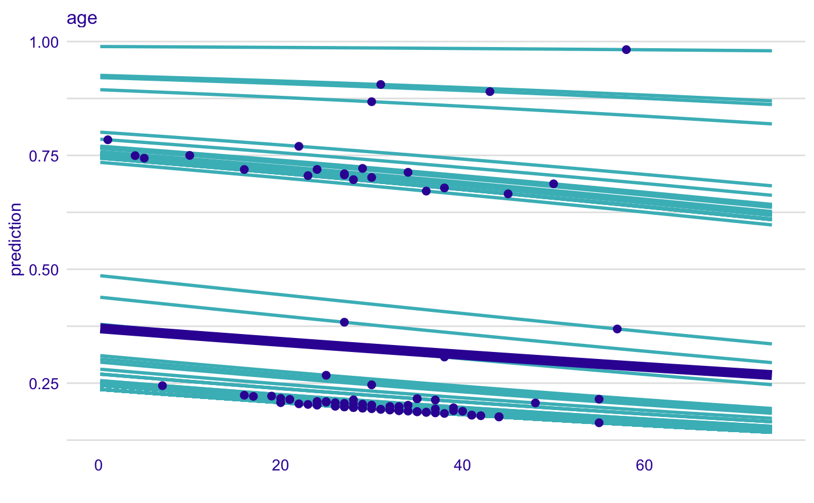
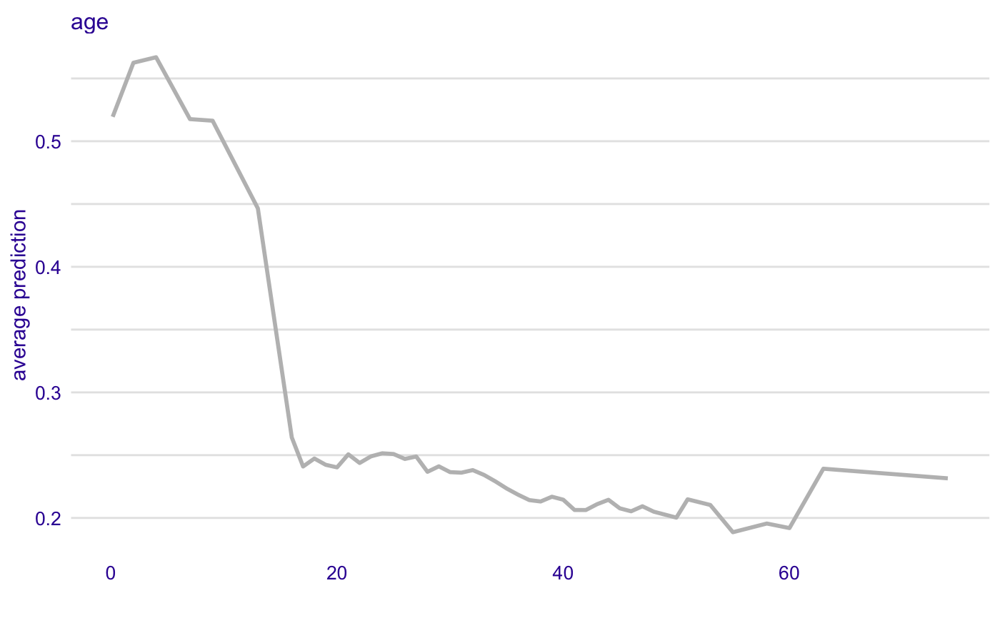

Adds a Layer with Aggregated Profiles
Function 'show_aggregated_profiles' adds a layer to a plot created with 'plot.ceteris_paribus_explainer'.
show_aggregated_profiles(x, ..., size = 0.5, alpha = 1, color = "#371ea3", variables = NULL)
Arguments
| x | a ceteris paribus explainer produced with function `ceteris_paribus()` |
|---|---|
| ... | other explainers that shall be plotted together |
| size | a numeric. Size of lines to be plotted |
| alpha | a numeric between 0 and 1. Opacity of lines |
| color | a character. Either name of a color or name of a variable that should be used for coloring |
| variables | if not NULL then only `variables` will be presented |
Value
a ggplot2 layer
Examples
library("DALEX") # Toy examples, because CRAN angels ask for them titanic <- na.omit(titanic) selected_passangers <- select_sample(titanic, n = 100) model_titanic_glm <- glm(survived == "yes" ~ gender + age + fare, data = titanic, family = "binomial") explain_titanic_glm <- explain(model_titanic_glm, data = titanic[,-9], y = titanic$survived == "yes") cp_rf <- ceteris_paribus(explain_titanic_glm, selected_passangers) pdp_rf <- aggregate_profiles(cp_rf, variables = "age") plot(cp_rf, variables = "age") + show_observations(cp_rf, variables = "age") + show_aggregated_profiles(pdp_rf, size = 3)library("randomForest") model_titanic_rf <- randomForest(survived ~ gender + age + class + embarked + fare + sibsp + parch, data = titanic) model_titanic_rf#> #> Call: #> randomForest(formula = survived ~ gender + age + class + embarked + fare + sibsp + parch, data = titanic) #> Type of random forest: classification #> Number of trees: 500 #> No. of variables tried at each split: 2 #> #> OOB estimate of error rate: 19.2% #> Confusion matrix: #> no yes class.error #> no 1317 101 0.07122708 #> yes 302 379 0.44346549#>#> Top profiles : #> gender age class embarked country fare sibsp parch #> 1960 male 36 victualling crew Southampton England 0.0000 0 0 #> 1960.1 female 36 victualling crew Southampton England 0.0000 0 0 #> 883 male 21 3rd Southampton Sweden 7.1701 0 0 #> 883.1 female 21 3rd Southampton Sweden 7.1701 0 0 #> 1594 male 44 victualling crew Southampton England 0.0000 0 0 #> 1594.1 female 44 victualling crew Southampton England 0.0000 0 0 #> _yhat_ _vname_ _ids_ _label_ #> 1960 0.002 gender 1960 randomForest #> 1960.1 0.862 gender 1960 randomForest #> 883 0.002 gender 883 randomForest #> 883.1 0.538 gender 883 randomForest #> 1594 0.002 gender 1594 randomForest #> 1594.1 0.950 gender 1594 randomForest #> #> #> Top observations: #> gender age class embarked country fare sibsp parch _yhat_ #> 1960 female 36 victualling crew Southampton England 0.0000 0 0 0.862 #> 883 male 21 3rd Southampton Sweden 7.1701 0 0 0.002 #> 1594 male 44 victualling crew Southampton England 0.0000 0 0 0.002 #> 1131 male 37 3rd Southampton Croatia 8.1303 0 0 0.004 #> 1445 male 20 victualling crew Southampton England 0.0000 0 0 0.002 #> 1432 male 33 victualling crew Belfast England 0.0000 0 0 0.002 #> _label_ _ids_ #> 1960 randomForest 1 #> 883 randomForest 2 #> 1594 randomForest 3 #> 1131 randomForest 4 #> 1445 randomForest 5 #> 1432 randomForest 6#> _vname_ _label_ _x_ _yhat_ _ids_ #> 1 age randomForest 0.1666667 0.51946 0 #> 2 age randomForest 2.0000000 0.56250 0 #> 3 age randomForest 4.0000000 0.56690 0 #> 4 age randomForest 7.0000000 0.51762 0 #> 5 age randomForest 9.0000000 0.51634 0 #> 6 age randomForest 13.0000000 0.44654 0plot(cp_rf, variables = "age") + show_observations(cp_rf, variables = "age") + show_rugs(cp_rf, variables = "age", color = "red") + show_aggregated_profiles(pdp_rf, size = 3)plot(pdp_rf, variables = "age", color = "grey")